If your process includes tasks for unauthenticated users, please refer to the documentation on Anonymous Users for special concerns that may apply to some settings.
If your process includes tasks for unauthenticated users, please refer to the documentation on Anonymous Users for special concerns that may apply to some settings.A Process Timeline is made up of a series of activities. Each activity in a Process Timeline identifies the task to be performed and the users that should perform the task. Activities can be easily added, moved and deleted from a Process Timeline Definition.
If your process includes tasks for unauthenticated users, please refer to the documentation on Anonymous Users for special concerns that may apply to some settings.These settings are included in all task types. To configure an activity in the Process Timeline, double click on the activity or click on the Properties  icon. All activities in a Process Timeline Definition will have the following information associated with them.
icon. All activities in a Process Timeline Definition will have the following information associated with them.
The first field on this dialog identifies the name of the activity. This information is important for the users and the Process Timeline owners because it is used to determine what activity in the Process Timeline is currently running, and what function is being performed. This name is also displayed on the routing slip to show where the process is currently running.
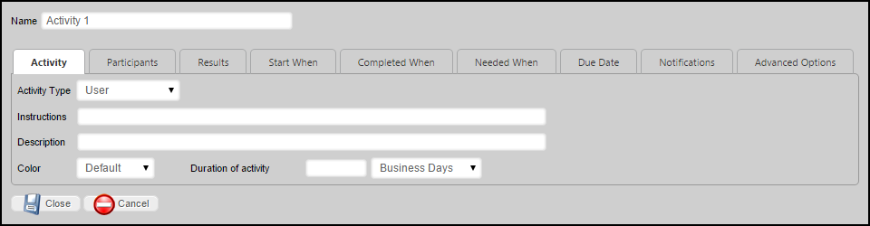
This dropdown contains type of activity to be used for the current activity. This dropdown will display different options depending on the type of activity selected.
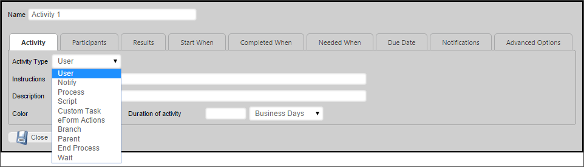
For example, the default Activity Type is the User activity. With the user activity selected, the second tab on the options dialog will be Participants. Selecting a different type of activity will change the second tab to a different option setting, and some activity types will remove some of the form's tabs completely, as they contain inapplicable settings for that type of activity.
The available activity types are described below.
|
ACTIVITY TYPE |
DESCRIPTION |
|---|---|
|
User |
Tasks that are assigned to specific users or groups of users to complete, and which are displayed in the task list of the assigned user(s). |
|
Notify |
Sends a notification email to selected users. |
|
Process |
Starts a sub-process, using the current process as a parent. The sub-process may be either a Process Timeline or Workflow. |
|
Script |
Runs a selected custom script. |
|
Custom Task |
Runs a selected Custom Task. |
|
Form Actions |
Attaches a selected Form to the Timeline, and, if desired, makes the Form the default Form for the Process Timeline. |
|
Branch |
Enables you to jump or rollback to different Process Timeline activities. This is usually used in conjunction with conditions, to start specific Timelines when the conditions are met. |
|
Parent |
Creates a parent activity under which similar activities can be organized. Parent activities are considered complete when the child activities are completed. |
|
Wait |
Pauses the execution of the Process Timeline, usually until some condition is met, after which, execution of the Process Timeline continues. |
| Case | Performs actions on a case instance that is associated with the Process Timeline. |
Once again, selecting different activity types will cause different option tabs to be displayed on the Properties dialog box for the activity.
This field contains an optional description of this activity. This can be used by the Process Timeline builder to document what this activity is used for and why it is here. The end-users will not see this field.
This contains instructions for the users telling them how to perform the task assigned to them. This information will be contained in the email sent to the users, it will be displayed on their task list, and it is displayed in the Process Timeline Package.
This field contains an optional color of this activity. This can be used by the Process Timeline builder to document help visualize the Process Timeline process.
This field contains an option to set the duration of the activity.
This field contains an option to set the weight of the activity. This will determine how much of the Process Timeline would be completed if this activity was completed.
The Participants Tab appears when the User activity type is selected.
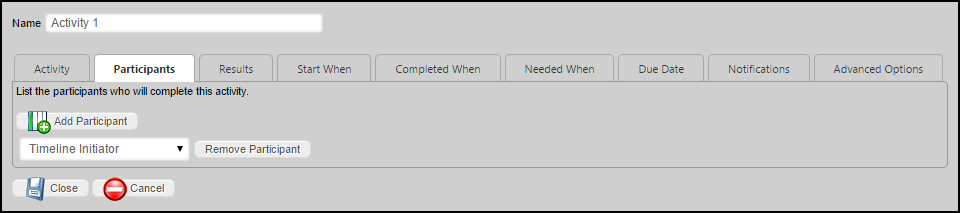
By default, Process Director assigns user activities to the Timeline Initiator. You can change the initial value to another participant, or you can add another participant by clicking the Add participant button. A Timeline activity can have multiple participants.
The Results Tab appears when the User or Wait activity types are selected. The Process activity also has a result, which is generated automatically, and is explained in the "Results of a Process Activity" section below.
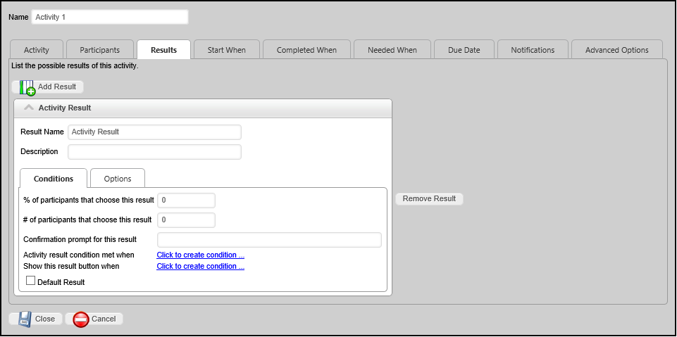
A user activity in the Process Timeline can have results assigned to it. Multiple results can be added to an activity by clicking on the Add Result Button. Each result will have its own properties, which are presented in a tabbed interface.
The results will be used as the Activity result for the task, which will appear in Routing Slips and in the Timeline Administration screen.
The name of the result, which will appear on all Forms, and as the completed result in the Timeline instance, if the result is selected by a user.
A brief text description of the result.
This is one of the two tabs displayed for each results configuration settings. The Conditions Tab includes the following controls.
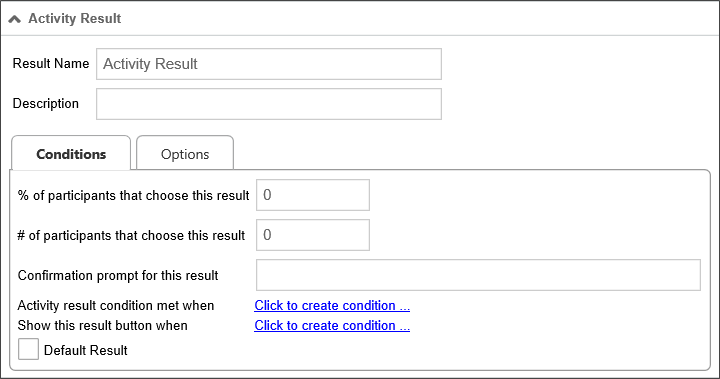
If the specified percentage of users select this result, the task will be considered complete, with this result recorded as the activity result. For example, if you wish the task to be concluded when 75% of users select this result, then the value you would place in the text box would be "75".
If the specified number of users select this result, the task will be considered complete, with this result recorded as the activity result. For example, if you wish the task to be concluded when 3 users select this result, then the value you would place in the text box would be "3".
If a user selects this result, the specified confirmation prompt will be displayed to the user, requiring the user confirm this selection before it is recorded.
This enables you to select a condition, or conditions, which, when met, will complete this task with the result recorded as the activity result. When setting an activity result condition, you must set the Completed When dropdown to "When Any Result Condition Is Met" to complete the activity.
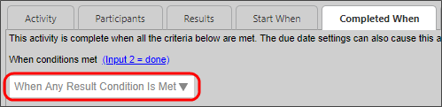
This enables you to select a condition, or conditions, which, when met, will display this result option to the user. If the condition(s) are not met, the result button will not be displayed to users.
This is a check box that, when checked, designates the result as the default result for the Timeline activity. When setting a Completed When condition, you must specify a default result, or the activity will either not end as expected, or will go into an error state.
The Process step requires that a Workflow or Process Timeline definition be configured. The configured process will be started as a subprocess (child process) of the main (parent) Workflow. A subprocess can consist of a Workflow or a Process Timeline. You may copy objects from the parent process to the child process and vice versa.
When a subprocess contains an End Process step or activity, it will return the name of the End Process step as a result for the parent Process activity. Process Timelines and Workflows use the End Process function differently, so the results can be slightly different depending on the type of subprocess that is called by the Process activity.
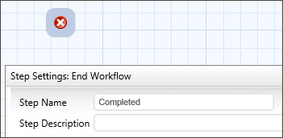
In the example above, the workflow End Process step is named "Completed". If this Workflow runs as a subprocess, then, when the process reaches this step and completes, the name "Complete" will be passed to the parent workflow as the result of the Process step that started the sub-process.
Workflows do NOT automatically end when an End process step is reached. Workflows end when all of the required steps in a Workflow have completed. You can have two Workflow paths running concurrently, or in parallel, each of which may have its own End Process step. If a Workflow contains two parallel paths that each have a different End Process step, then, when the subprocess completes, it will return a comma-separated string containing the names of BOTH end process steps. In the parent Process Timeline, the returned string will then be set as the result of the Process activity that started the subprocess.
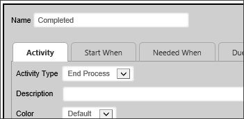
Unlike the End Process step in the Workflow, the End Process activity in a Process Timeline stops the running of the Process Timeline immediately. As such, the End Process activity can only run once in a Process Timeline. So, if you have parallel activities running in a Process Timeline, all of the parallel steps must complete before the End Process activity is reached. Process Timelines with multiple End Process activities will need to have conditions set on each End Process activity to ensure that only one of the End Process Activities runs. When the subprocess completes, the name of the End Process activity that was run will be returned to the parent process as the result of the Process activity that started the subprocess.
This is one of the two tabs displayed for each results configuration settings. The Options Tab includes the following controls.
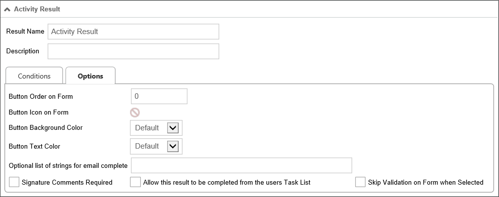
This is a numeric value that determines the order in which the activity result button will appear on a Form. You may order the activity results in any order you desire. If you do not order the buttons manually, they will be displayed in the order in which the result was created. In older versions of Process Director, Process Timeline activity results were specified using a comma-separated list. The display of the buttons on the form for each result followed the order in which they were listed. Now, when migrating from an older release to this one, the display order of the results will be automatically preserved. To modify the order, adjust the "Button Order on Form" property of each result in the activity Results tab.
Clicking on the icon allows you to select a custom icon from a list. The selected icon will appear on the activity result's button on the Form.
The setting enables you to select a background color for the result button that will appear on the form.
The setting enables you to select a text color for the result button that will appear on the form.
This text box will accept a comma-separated list of string values. For tasks that can be completed by email, a user can complete the task by replying to the task assignment email with one of the strings in the list you enter into this control. For example, the result displayed above is the "Reject" result. You might put the following list of responses into this control: "Reject, No, Disapprove, Rejected, Not Approved". If a user replies to the task assignment email with "No"—or any of the other possible responses in the list—as the body of the email message, the Reject result will be recorded as the activity result.
If this option is selected, then, if the user selects this result, then the Results Comments control in the Form cannot be empty.
If this option is selected, then users can complete this task from their task list without opening the Form for the process.
 This feature requires the use of a custom Task List that includes a column to display the results.
This feature requires the use of a custom Task List that includes a column to display the results.When the user completes a task from the task list, Process Director will display a small popup that indicates the task completion is in progress. Additionally, if the result selected is configured to require completion comments, Process Director will prompt the user for the comments before completing that task.
The size of the prompt and confirmation dialogs will not usually need to be changed, however, if, for some reason the size does need to be changed, there are custom variables available to change the width and height of the dialogs: nTaskCompleteDialogWidth, nTaskCompleteDialogHeight, nTaskCompletePromptDialogWidth, and nTaskCompletePromptDialogHeight. Documentation for these four custom variables can be found in the Miscellaneous Custom Variables topic of the Developer's Guide.
Check this box to specify that a given activity result will cause validation to be skipped. The feature is especially useful for steps/activities that include an option for the user to abandon or reject a form, which the user should be able to accomplish without, for example, filling in all required fields.
This allows you to add dependencies to the activity. Click on the Add Dependency button. A dropdown list will display of all the activities that are available in the Process Timeline.
If an activity has a start condition that is not met and the Advanced Options > Activity Required to Complete Parent checkbox is checked, the parent activity will remain running even if the child activity has not started.
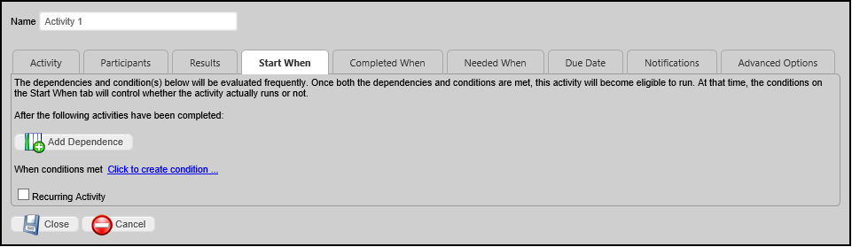
This allows you to indicate when the activity is considered complete. Conditions can be defined that determine when this activity should be terminated.
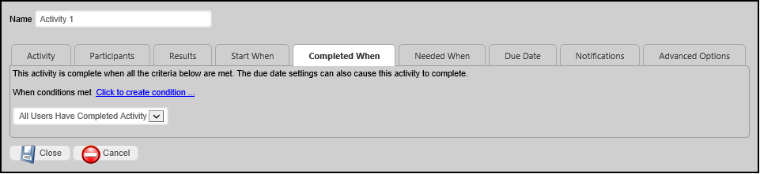
By default, a User activity completes when all users have completed the activity manually. If you wish to set a Completed When condition, you must set the Completed When dropdown to "When Any Result Condition Is Met". Additionally, you must set a default result on the Results tab for the activity to complete the activity, and/or to prevent the activity from going into an error state.
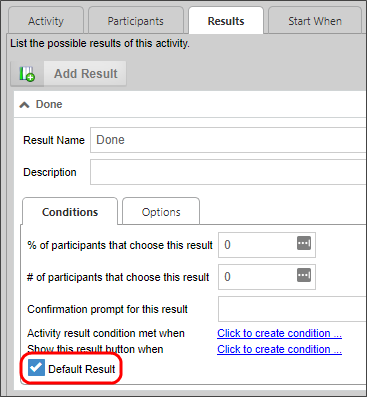
Another option on the dropdown, "All Users Complete or Result Number Met", enables you to immediately end a task automatically—even if the task requires all users to complete—by specifying certain results to override that and force the activity to be completed. For example, you may have 3 results on an activity and normally want all users to complete their task, however you may want one result to immediately end the activity when a user selects it using the "Number of Users" set to 1.
This allows you to define when this activity is “needed”. The conditions indicate when this activity is enabled (needed). If the condition is not met, the activity instance is created to satisfy any dependencies, but is it not run.
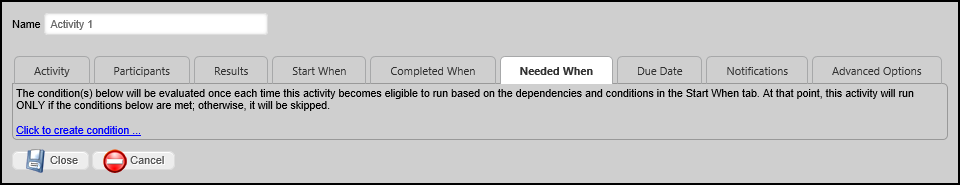
Each activity in the Process Timeline can have unique time limit/due date options. Process Director runs as a virtual directory in IIS and processes all time related events like due dates when activity is present on the system (e.g. a login). To force this activity checking more often, you can schedule a command in the Windows Scheduler.
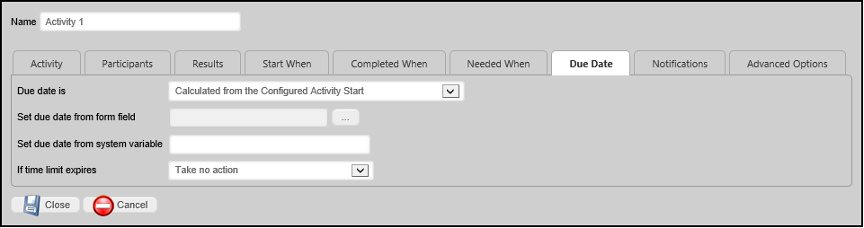
This specifies how to calculate a due date for this activity. The activity due date is optional. If an activity does not complete by the due date specified it can automatically transition to the next activity in the Process Timeline. The due date can also be used to prioritize items in a user’s Task List.
|
Option |
Result |
|---|---|
|
No Calculated Due Date |
A Due Date is not calculated. |
|
Calculated from Actual Activity Start |
The due date is calculated from the date the activity was actually started. |
|
Calculated from Configured Activity Start |
The due date is calculated from the date the activity was configured to start in the Timeline Definition, rather than when it actually started. |
|
Calculated from minimum of Actual or Configured Activity Start |
The due date is calculated from either the date the activity was configured to start in the Timeline Definition, or when it actually started, whichever is first. |
This will enable the user to specify a due date on the form using a Date Picker for that activity in the Process Timeline process.
The due date will be set from the specified system variable.
If the time limit (due date) passes before this activity is complete these are the actions that can be taken. This dropdown will display different items in the User Activity type and the Wait Activity type.
Each activity in the Process Timeline can have unique notification options.
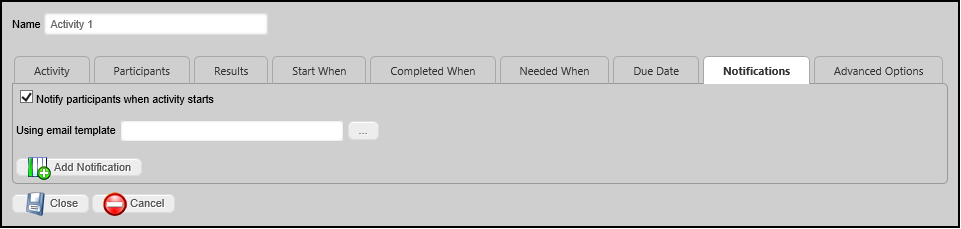
This will allow the Process Timeline to notify all users that have been assigned from the Participants tab.
This will allow you to add and select a user or users from various places in the Process Timeline and form to notify in that current activity. Once you have made your selection you will have to select from the Choose Notification Time.
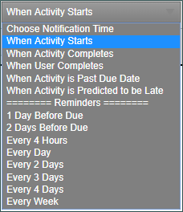
When Activity Starts.
When Activity Completes.
When User completes: You can choose specific users or groups whom you wish to complete the task prior to notification.
When Activity is past due date
When Activity is predicted to be late: Since Timelines can predict when activities will run late, this notification will be sent any time Process Director makes such a prediction.
You may also choose various reminder times, to send notifications a varying number of days before or after a task is due. Sending these reminders are useful for creating escalation notifications, or notifying managers that tasks are slipping past due dates.
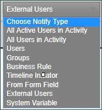
All Active Users in Step: Send a notification to all users who have yet to complete a user step
All Users in Step: Notify all the users involved in this User step.
Users: Specific users to notify.
Groups: Notify all users in a specific group.
Business Rule Value: Notify the user result of a Business Rule.
Workflow Initiator: Notify the initiator of this workflow instance.
From Form Field: Notify a User specified by a field on the container Form.
External Users: Send a notification to an email address you can specify in the provided text box.
This is an optional email template to use when sending email notifications to users in this activity. If this is not specified, the default email template for the Process Timeline will be used. If a default email template is not specified, the notification will use the email template that is shipped with Process Director. For more information on email templates refer to the section named Email Templates in this guide.
Depending on the Activity type,several different options will be available on this tab. Since the User Activity is the most common Activity type, the options for a User Activity are described below.
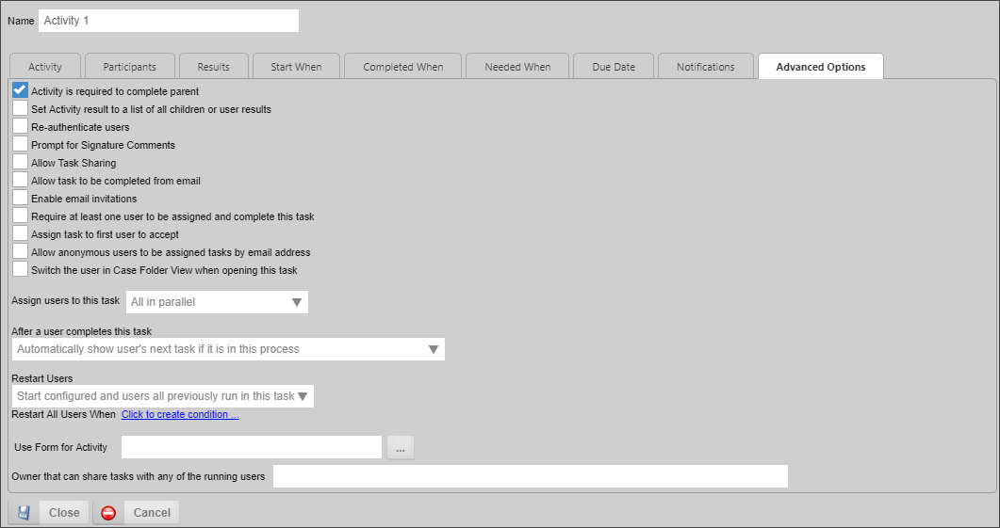
Checking this option will not allow a parent activity to complete until this activity is complete. This is the default option. This usually applies to an activity that is organized under a Parent activity type. If this activity does not complete, then the Parent activity cannot complete.
By default, the Result of a user activity that is completed by multiple users will be the single result selected by most users. For instance, if two users pick Reject and one picks Accept, the activity result is set to "Reject". In the case of a tie, e.g., if one user selects Accept and one Reject, the Result is set to "Accept, Reject". Selecting this option on a user activity causes the Result to be set to the comma-separated union of all Results selected by users. So, in the first example above, the Result would be set to "Reject, Reject, Accept" or some similar result. The order of the results in the results list is not guaranteed.
Forces users to re-authenticate prior to completing a task. For example, when this option is selected, built-in users will be presented with a login screen, requiring them to log in prior to completing the task, even if they are currently logged in to Process Director. This is an extra security precaution.
Checking this option will cause a prompt to appear to users to enter signature comments when completing the task.
Checking this option will enable task sharing through the Shared Delegation feature. If this option is not checked, this task will not be available for Shared Delegation.
Checking this option will enable users to complete the task by replying to an email without opening the Form associated with the activity or Process Timeline. Process Director can monitor an email inbox, import and parse the emails, and search for specific text in the email to determine the result. If a possible result for an activity is "Approved", a user can reply with the word "Approved" in the body text of the reply, and Process Director will complete the activity with the result of "Approve".
Checking this option will enable users to invite others to perform the user task by forwarding the task assignment email to them. The task assignee can forward the email to a desired alternate, for example, and when that alternate clicks on a completion link in the email, the task will be completed with the appropriate result, and with an annotation that the task was completed by the users invited by the original task assignee.
If this option is checked, at least one user will be required to complete the task, or the task cannot complete. Depending on how the task assignment is configured, it's possible that no users will be assigned to the task in certain scenarios. For instance, if a task restarts after all users have completed their assignment, and the assignment is set to "Start users that did not complete previously" there will be no available user to which the task can be re-assigned. Checking this option will assign the task to one of the previously completed users.
If an administrator cancels a user in an Activity where this option is set, the Activity will go into an error state. The administrator will have to cancel the Activity to cause it to move on.Checking this option will, when the task is assigned to multiple users, allow the first user to accept the task to be assigned to complete the task. When the task begins, all of the configured users will receive a task list item that requests them to accept the task. When opening the Form, an Accept Task button will be displayed at the bottom of the Form. When any of the configured users clicks the Accept Task button, Process Director will remove task acceptance request from the task list of all the other configured users, and the task will be assigned solely to the user who accepted the task.
Checking this option will enable anonymous users to complete a task based on the user's email address. This is a required option when using the Email Anonymous Task List system variable. In the vast majority of use cases, however, the email address will be taken from a Form field identified on the Participants tab.
Access to Process Director for unauthenticated or anonymous users is enabled for Cloud and Subscription licenses. On-premise licenses using the legacy Tired licensing model require an additional, optionally licensed component.If this task is part of a Case Management application, checking the property will automatically display the Case Folder view when the user opens the task.
This option enables you to select how wish to assign a task when multiple users are associated with the same task. You have the following options:
|
OPTION |
DESCRIPTION |
|---|---|
|
All in parallel |
All users will be assigned the task at the same time, and will complete their actions at the same time as the other users. |
|
All in series |
Each user will be assigned the task individually, and each user must complete the assigned action before the task is assigned to the next user. The process will continue until all users have completed their actions. |
|
One (Round Robin) |
Only one user will be assigned the task each time an instance of the Timeline is run. Each time an instance is run, a different user will be assigned the task until all users have been assigned an instance of the process. This will divide the assignments equally among all assigned users. |
|
One (fewest tasks in this process) |
Only one user will be assigned the task each time an instance of the Timeline is run. Process Director will assign the task to the user who has the fewest number of active tasks pending in this process. This method assigns the task to the user who has the smallest workload in this process. |
|
One (fewest tasks overall) |
Only one user will be assigned the task each time an instance of the Timeline is run. Process Director will assign the task to the user who has the fewest number of active tasks in their task list. This method assigns the task to the user who has the smallest overall workload. |
This option determines how a user's tasks are displayed when a user is assigned two sequential tasks in a process. The default in Process Director is to automatically show the user's next task if it is in the current process.
For example, if a user completes a task in a Form, and is also assigned the next task in the sequence, once the user clicks the OK or other task completion button on the Form, the Form will not close, but will simply redisplay itself to allow the user to complete the next task in the sequence. For various reasons, you may wish to override this behavior, in which case the Form will close once the first task has been completed, and the user will have to re-open the Form to complete the next task in the sequence.
You have the following options for configuring the behavior of Process Director:
|
OPTION |
DESCRIPTION |
|---|---|
|
Automatically show user's next task if it is in this process |
This is the default behavior, and will automatically redisplay the Form once the user completes the first task in the sequence. |
|
Automatically show user's next task if it is for this step in a different process |
This selection will automatically show the user's next task if the user is assigned a task in another process. For instance, if the current task starts a subprocess, and the user is assigned a task in the subprocess, the subprocess task will automatically be displayed. |
|
Do not show the user's next task |
Once a user completes the task, the Form will close, and the user must reopen the Form from the task list to begin performing the next task. |
|
Automatically show user's next task if it is for any step for any related sub- process. |
This selection will automatically show the user's next task if the user is assigned a task in either the current process or related sub-process. |
This option determines how participants are assigned to the activity when it must be restarted, which is particularly relevant when an implementer changes the participants assigned to an activity in the Process Timeline definition. An existing instance may have been created when different participants were configured to participate in the task. This option enables you to determine how to handle user assignments when the configured users have changed.
It is also important to note that the term "restart" is used for both:
In either case, the Restart Users options you select will be applied.
The following options are available:
|
OPTION |
DESCRIPTION |
|---|---|
|
Start only configured task participants |
This option will assign the task to the currently configured users, irrespective of which users may have been previously assigned to the activity. |
|
Start configured and users all previously run in this task. |
By choosing this option, you ensure that both the currently configured users, as well as any users who were previously assigned the task, are assigned the task. |
|
Start only users that previously completed this task |
This option will assign the task only to users who completed the task when it was previously run for this instance. Those users will be re-assigned the task irrespective of whoever is currently configured for task assignment in the Process Timeline definition. |
|
Start from last completed user |
If multiple users are assigned to the activity instance, this option will re-assign the activity to the last user who completed it when it was initially run. |
|
Start users that did not complete previously |
If multiple users are assigned to the activity instance, this option will assign the task to users who did not previously complete it. For instance, if the activity uses a round-robin assignment, the activity will be assigned to one of the users who were not assigned it on the initial run. |
This will allow you to specify a Form to use in this activity. This controls the form displayed when a user opens their Task List.
This property enables you to specify a system variable that can return users who will be given shared task permission for this specific activity. This enables dynamic task sharing per each Timeline Activity, as opposed to the normal task sharing, which is set universally.
Click here to use the Simulator to create and configure a Timeline Activity.